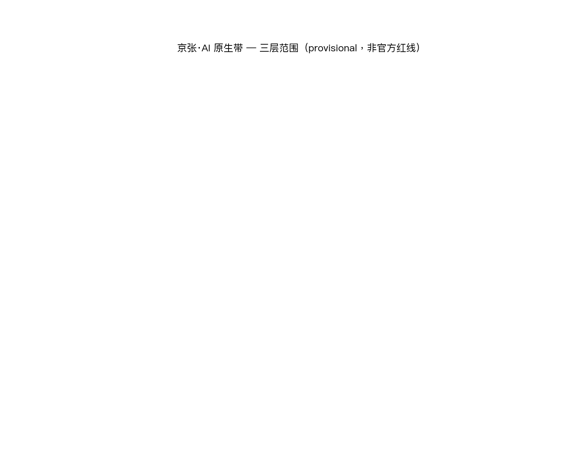
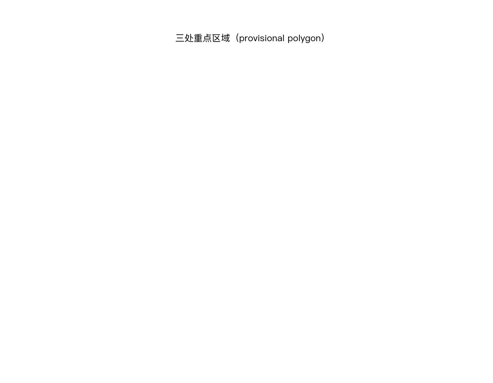
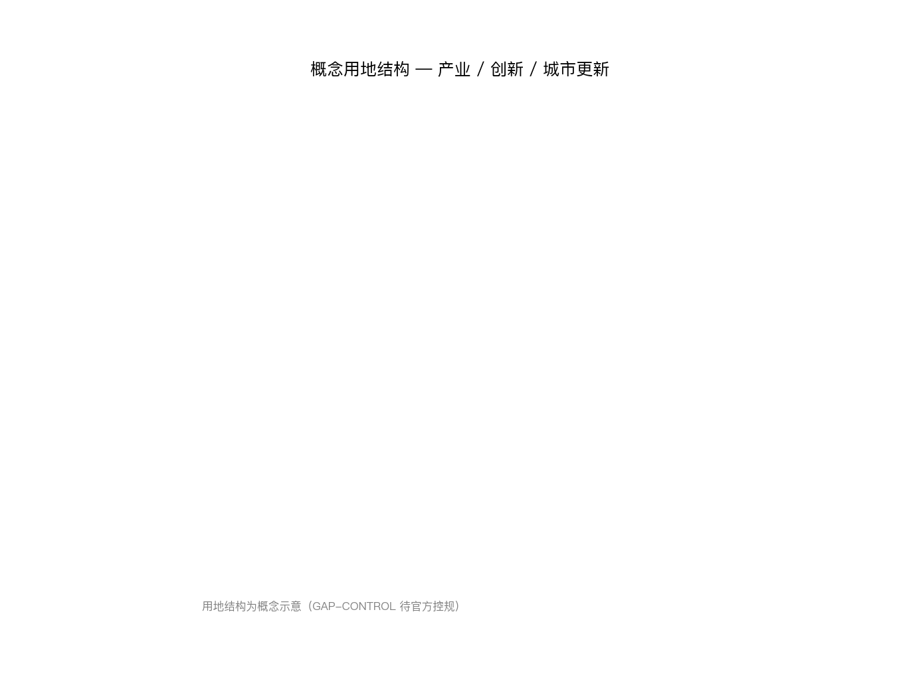
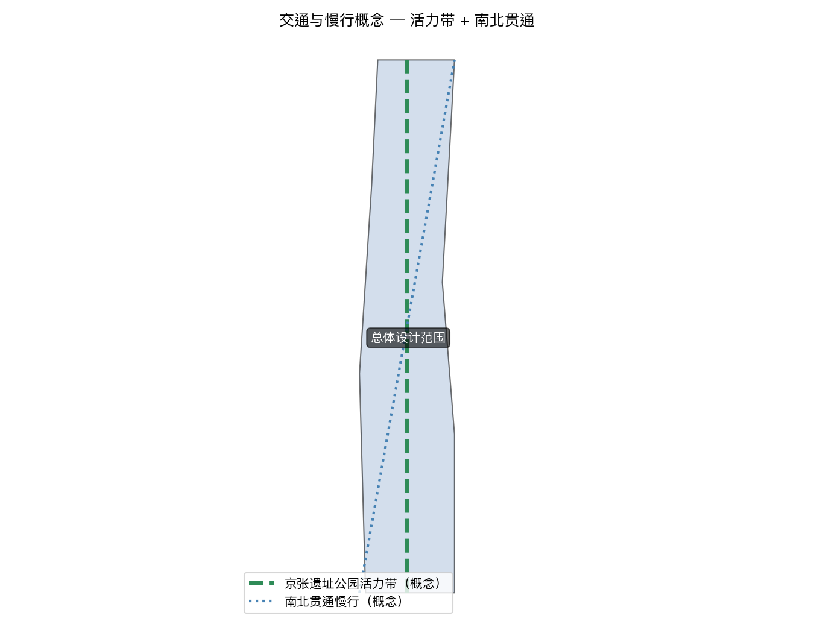
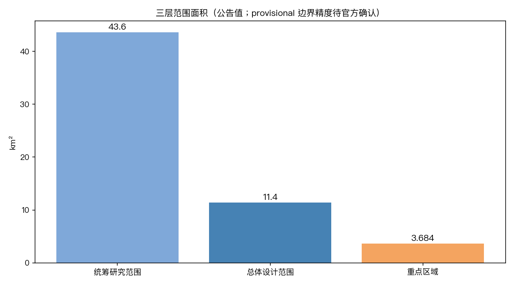

⚠️ 方案基于 provisional 边界与公开资料生成，为 AI 智能体参与真实城市设计的征集方案；不构成官方规划结论。

| 层 | 回答 | 空间载体 |
|---|---|---|
| 生态层 | AI 创新生态怎么生长 | 众智园（全栈自主）/ 原点社区（近校人才）/ 大钟寺（产业集聚） |
| 服务层 | AI+ 公共服务怎么落地 | 10 张场景卡（开源/沙盒/驿站/慢行/路演/低碳/转化/数据/生活/活动周） |
| 设施层 | AI 原生城市怎么承载 | 公共数据底座 + 端侧算力 + AI 标识网络 |
| ⚖️ 治理底座 | AI 城市怎么可信 | 四可框架：可管 → 可控 → 可信 → 可持续 |



蓝绿廊道与开放空间沿京张走廊穿插布局，承担生态缓冲与公共活动功能；具体图层见 geometry/green_space.geojson 与 geometry/public_space.geojson。
建筑规模与拆改留方案见 geometry/buildings.geojson 与正文用地章节；新建、保留、拆除以设计意图表达，provisional 边界下不做法定规模承诺。
更新项目清单、实施政策与分期计划见正文第 10 章与 geometry/phasing.geojson。
| # | 场景 | 空间 | 合规标签 |
|---|---|---|---|
| 01 | 开源发布厅 | 原点社区 | 版权/开源许可合规 |
| 02 | 安全治理沙盒 | 众智园 | 治理即基础设施（AI Verify 对齐） |
| 03 | 端侧算力驿站 | 总体范围 | 算力公共品 |
| 04 | AI 慢行导航 | 遗址公园 | 防过度监控 |
| 05 | 国际路演客厅 | 大钟寺 | 数据出境合规 |
| 06 | 清河低碳廊 | 众智园 | 绿蓝线约束 |
| 07 | 成果转化街 | 原点社区 | 知识产权边界 |
| 08 | 数据要素会客厅 | 大钟寺 | 数据合规前置 |
| 09 | 生活服务样板街 | 社区 | 公共服务合规（GB 45438） |
| 10 | AI 活动周路线 | 一带 | 活动运营合规 |
任务覆盖：本方案覆盖公告 agent.1–agent.6 面向智能体任务书要求（范围判定、生态与场景、用地与拆改留、交通与市政、蓝绿公共空间、指标与合规矩阵），详见正文与 design_depth_matrix.json。
自检状态：四门自检（确定性校验 / 空间评审 / 视觉打包 / 专业证据）通过后，self_check.json 记录结果；当前以 manifest.validation_claim 为准。
来源：sources.json 登记 20 条来源（公告、任务书、案例资料与 provisional 数据），全部可溯源。
假设：assumptions.json 登记 1 条显式假设（含 provisional 边界与官方数据缺口的处理）。
新加坡（治理即基础设施）· 杭州（城市大脑）· 深圳（全栈自主）· 硅谷（人才循环）· 特拉维夫（旋转门）· 奥斯汀（大学共生）——共同指向：成功的 AI 创新生态都把治理内置为基础设施。
可管（制度：法规/标准/许可）→ 可控（检查：安全测试/审计）→ 可信（披露：标识/透明度/问责）→ 可持续（更新：规则库版本化）。治理不是约束创新，而是让 AI 城市可信的吸引力。
site_boundary / key_areas（provisional_constraint）· 指标体系（公告值 + 治理指标）· 详见 完整报告。
